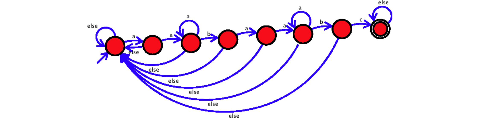
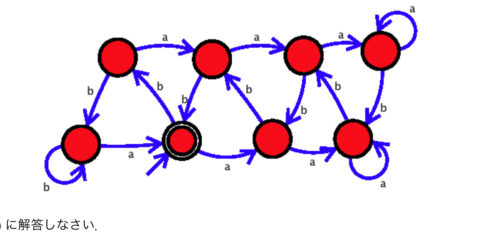

田中哲朗クラス（理科一類22,28,32組）｜7月28日（火）2限
以下の電子錠をオートマトン（有限状態機械）としてモデル化したい。・途中でどのような入力があっても、最後7文字の入力が暗証番号「aabaabc」なら解錠する。・一度解錠した後は何を入力し続けても解錠状態となる。解錠状態が終了状態となるように以下のオートマトンを作ってみた。

このオートマトンには誤りがある。以下の(a)〜(c)に解答しなさい。
図の8状態は、パスワード「aabaabc」の各文字が何文字目まで一致したかを表している：状態0（トラップ／開始、自己ループelse）、状態1（"a"、1文字一致）、状態2（"aa"、2文字一致、自己ループa）、状態3（"aab"、3文字一致）、状態4（"aaba"、4文字一致）、状態5（"aabaa"、5文字一致、自己ループa）、状態6（"aabaab"、6文字一致）、状態7（"aabaabc"完成、受理、自己ループelse）。遷移は、状態0はaで状態1へ・else（b,c）で自身にとどまる。状態1はaで状態2へ・elseで状態0へ。状態2は自己ループa、bで状態3へ、elseで状態0へ。状態3はaで状態4へ、elseで状態0へ。状態4はaで状態5へ、elseで状態0へ。状態5は自己ループa、bで状態6へ、elseで状態0へ。状態6はcで状態7へ、elseで状態0へ。状態7は自己ループelse（絶対に外れない受理状態）。
バグの所在：状態5（"aabaa"まで一致、5文字目まで完了）で入力aが来た場合の遷移が誤っている。図では状態5に自己ループaが描かれ「状態5にとどまる」ことになっているが、"aabaa"の後に更にaが続くと文字列は"aabaaa"となり、この末尾から見てパターン「aabaabc」の接頭辞と一致する最長の部分を数え直すと、末尾6文字"abaaa"はパターンの接頭辞ではなく、末尾2文字"aa"のみがパターンの接頭辞"aa"と一致する。したがって状態5でaが来た時は本来は状態2（"aa"まで一致した状態）に遷移すべきであり、状態5にとどまる（自己ループ）のは誤りである。
(a) aabaaabc（8文字）。この入力の最後7文字は"abaaabc"であり暗証番号"aabaabc"と一致しない（不成立）ため解錠されてはいけない。しかし誤ったオートマトンでは、"aabaa"（状態5）の後の6文字目のaで誤って状態5にとどまり（バグ）、続く"bc"で状態6→状態7（受理）に進んでしまい、誤って解錠してしまう。トレース：状態0→a→状態1→a→状態2→b→状態3→a→状態4→a→状態5→a(バグで状態5のまま)→b→状態6→c→状態7（受理、誤り）。
(b) aabaaabaabc（11文字）。この入力の最後7文字はa-a-b-a-a-a-b-a-a-b-cの11文字のうち末尾7文字であり"aabaabc"となり暗証番号と一致するため、本来解錠されなければならない。しかし誤ったオートマトンでは、最初の"aabaa"（状態5）の後の6文字目のaで状態5にとどまってしまい（バグ）、続く"baabc"を処理する際に本来の状態2からではなく誤った状態5から遷移が始まってしまうため、途中で何度もelse遷移によって状態0に戻されてしまい、最終的に受理状態に到達できず、本来解錠されるべき入力なのに解錠されない。
(c) 修正後のオートマトンは、状態5の自己ループaを取り除き、代わりに「状態5でaが来たら状態2へ遷移する」という辺に置き換える。それ以外の状態・遷移はすべて元のままでよい。修正後の完全な遷移一覧：
| 状態 | a | b | c（else含む） |
|---|---|---|---|
| 状態0（開始） | 状態1 | 状態0 | 状態0 |
| 状態1 | 状態2 | 状態0 | 状態0 |
| 状態2 | 状態2（自己ループ） | 状態3 | 状態0 |
| 状態3 | 状態4 | 状態0 | 状態0 |
| 状態4 | 状態5 | 状態0 | 状態0 |
| 状態5 | 状態2（修正点） | 状態6 | 状態0 |
| 状態6 | 状態0 | 状態0 | 状態7（cで） |
| 状態7（受理） | 状態7 | 状態7 | 状態7 |
このタイプのオートマトンは、文字列探索の代表的アルゴリズムであるKMP法（Knuth–Morris–Pratt法）の考え方そのものである。各状態は「パターンの何文字目まで一致しているか」を表し、次の文字を読んだときに「一致が続く／途中で崩れる」場合の遷移先を、パターン自身の構造（接頭辞と接尾辞の重なり）から決定する。今回のバグは、状態5（"aabaa"）でaを読んだ後にどこまで戻るべきかを「パターンの接頭辞のうちどれだけ長いものが、新しい文字列の接尾辞と一致するか」で正しく計算せず、誤って「そのまま状態5にとどまる」としてしまった点にある。KMP法ではこの「戻り先」を事前に「失敗関数」として全状態について正確に計算しておくため、同種のバグは生じない。
条件Aを「aとbだけからなる入力で、それまでに現れたbの個数がaの個数の2倍」とする。条件Aを満たすかどうかを判定するオートマトンを作ることを試みた。以下が作成してみたオートマトンである。

その後、「条件Aを満たすかどうかを判定するオートマトンを作ることはできない」ことを次のように証明する。空欄(f)を埋めよ。
条件Aを満たすかどうかを判定する状態数$N$のオートマトンが作成できると仮定する。aが$i$個続いた入力を$a^i$と書くことにする。入力の集合$\{a^0,a^1,\dots,a^N\}$を考えると、集合のサイズは$N+1$なので、$0\le i<j\le N$で$a^i$の入力後の状態と$a^j$の入力後の状態が等しい$i,j$が必ず存在する。この状態は$a^i$の入力後の状態なので、この後にbが続けて(f)個入力されると終了状態にならなくてはいけない。しかし$a^j$の入力後の状態でもあるので、aが$j$個、bが(f)個の入力で終了状態になることになる。これは条件Aを満たさない入力である。
図は上下2段×4列、計8状態からなる。上段をT1,T2,T3,T4（左から右、T4のみ自己ループa）、下段をB1,B2（受理状態、二重丸）,B3,B4とする。上段は左から右にa辺で連結（T1→T2→T3→T4、T4は自己ループa）。下段も同様（B1→B2→B3→B4、B4も自己ループa）。B1は自己ループbを持つ。b遷移（対角線）は、T1→B1、T2→B1、B2→T2、T3→B2、B3→T3、T4→B3、B4→T4である。開始状態はB2——空入力で条件Aは自明に成立する（$0=2\times0$）ため、開始状態は受理状態でなければならない。
(d) aaabbbb（7文字、a=3個,b=4個）。条件Aはb=2a=6を要求するが実際はb=4なので不成立。しかしオートマトンは以下のようにB2（受理）で終了してしまう：トレース：B2→a→B3→a→B4→a→B4（自己ループ、3個目のa。ここでB4は「2個以上のa超過」を区別できずに飽和する）→b→T4→b→B3→b→T3→b→B2（受理、誤り）。この誤りが生じる理由は、状態B4に達すると、それ以上aが何個来ても状態が変化しない（自己ループ）ため、実際には3個のaが入力されていても、オートマトンは（記憶容量の限界から）あたかも2個のaが入力された場合と同じように振る舞ってしまい、2個のa分（=b4個）の帳尻合わせで受理してしまう点にある。
(e) aaabbbbbb（9文字、a=3個,b=6個）。条件Aはb=2a=6を要求し、実際にb=6なので成立（受理されるべき）。しかしオートマトンは以下のように非受理状態で終了してしまう：トレース：B2→a→B3→a→B4→a→B4（自己ループ,3個目のa、前述の理由で状態が飽和）→b→T4→b→B3→b→T3→b→B2→b→T2→b→B1（非受理、誤り）。(d)と同じ「3個以上のaを区別できない」バグにより、本来6個のbが必要なところ、オートマトンは（2個のa分の記憶しか持てないため）4個のbで受理サイクルを一周し終えてしまい、残りの2個のbで受理状態B2を通り過ぎてB1まで進んでしまう。
(f) $a^i$の入力後の状態から、条件Aを満たすには合計でb個数$=2\times$a個数$=2i$が必要なので、この状態の後にbが$2i$個続けば終了状態になるべきである。よって(f)は$2i$個。
条件Aのように、必要な差・比の情報を際限なく（入力の長さに比例して）保持しなければならない判定は、有限個の状態しか持たないオートマトンでは原理的に実現できない。今回の(f)の証明は「鳩の巣原理」（$N+1$個の入力$a^0,\dots,a^N$に対し状態は$N$種類しかないので、必ずどこかで状態が重複する）を使う典型的な非正則性の証明であり、個別問題2018大問2(2)の背景知識で触れた「aの個数がbの個数よりちょうど1多い」判定が有限状態機械で不可能なことの証明とも同じ構造を持つ。バグのあるオートマトン（B4・T4の自己ループ）は、まさにこの限界を「無理に有限状態で近似しよう」とした結果、3個以上のaを区別できずに誤動作したものと理解できる。
古代の遺跡から{0,1}の記号列（長さ20）が発見された。
この記号列が{0,1}の記号が決まった確率で生成されたデータであり、確率は観測データ中の出現頻度と仮定して平均情報量を求める。以下の表(a)〜(e)を埋めよ。
| 記号 | 出現回数 | 出現確率 | 情報量 | 平均情報量 |
|---|---|---|---|---|
| 0 | 14 | 0.7 | (a) | 0.7×(a) |
| 1 | (b) | (c) | (d) | (c)×(d) |
| 計 | 20 | 1.0 | (e) |
その後、この記号列は実は$A\to00,\ B\to01,\ C\to10,\ D\to11$と符号化された4文字{A,B,C,D}の列であり、記号列は「CABDABABAA」を表現していたと分かった。改めて{A,B,C,D}の確率を観測頻度と仮定して平均情報量を計算し直す。以下の表・文の(f)〜(n)を埋めよ。
| 記号 | 出現回数 | 出現確率 | 情報量 | 平均情報量 |
|---|---|---|---|---|
| A | 5 | 0.5 | (f) | 0.4×(f) |
| B | 3 | 0.3 | (g) | 0.3×(g) |
| C | 1 | (h) | (i) | (h)×(i) |
| D | (j) | 0.1 | (k) | 0.1×(k) |
| 計 | (l) | 1.0 | (m) |
「(e)と(m)を比較すると、2進数の表現で2文字分なので(m)が(e)のちょうど2倍になることを期待した。実際に計算してみたところ、(m)は(e)の2倍(n)ことが分かった。」（(n)には「と等しい」「より大きい」「より小さい」のいずれかが入る）
まず記号列「10000111000100010000」（20文字）中の0と1の出現回数を数える。記号列を1文字ずつ並べると 1,0,0,0,0,1,1,1,0,0,0,1,0,0,0,1,0,0,0,0 であり、1の個数は6個、0の個数は14個（合計20、問題文の「0が14個」と整合）。
(a) 0の情報量$=-\log_2 0.7$（$0.7=7/10$なので$-\log_2(7/10)=\log_2 10-\log_2 7$。簡単な数値にならないため式の形のまま示す。$\approx0.515$ビット）。
(b) 1の出現回数$=20-14=$6。
(c) 1の出現確率$=6/20=$0.3。
(d) 1の情報量$=-\log_2 0.3$（式の形、$\approx1.737$ビット）。
(e) 平均情報量$=0.7\times(-\log_2 0.7)+0.3\times(-\log_2 0.3)$（式の形、$\approx0.881$ビット）。これは2値のベルヌーイ分布のエントロピー$H(0.7)$そのものである。
次に「CABDABABAA」（10文字）の出現回数を数えると、C=1,A=5,B=3,D=1（合計10）。
(f) Aの情報量$=-\log_2 0.5=$1（ちょうど1ビット）。
(g) Bの情報量$=-\log_2 0.3$（式の形、$\approx1.737$ビット）。
(h) Cの出現確率$=1/10=$0.1。
(i) Cの情報量$=-\log_2 0.1$（式の形、$\approx3.32$ビット）。
(j) Dの出現回数=1。
(k) Dの情報量$=-\log_2 0.1$（式の形、$\approx3.32$ビット。Cと同じ確率なので同じ情報量）。
(l) 出現回数の合計=10。
(m) 平均情報量$=0.5\times1+0.3\times(-\log_2 0.3)+0.1\times(-\log_2 0.1)+0.1\times(-\log_2 0.1)=0.5+0.3\times(-\log_2 0.3)+0.2\times(-\log_2 0.1)$（式の形、数値でおよそ$0.5+0.3\times1.737+0.2\times3.32\approx0.5+0.521+0.664=1.685$ビット）。
(n) (e)$\approx0.881$ビットの2倍は$\approx1.762$ビットだが、(m)$\approx1.685$ビットはこれよりも小さいので、(m)は(e)の2倍より小さい。
もし0/1の各記号が本当に独立に確率0.7/0.3で生成されていたなら、2文字組（AA,AB,...の16通り）の確率分布は各1文字の確率の単純な積になり、2文字分の平均情報量はちょうど1文字分の平均情報量の2倍になるはずである。しかし実際にはA,B,C,Dの出現頻度（0.5,0.3,0.1,0.1）は、単純に0/1を独立同一分布とみなして2文字ずつ組み合わせた場合に期待される確率分布（例えばA=00の確率は本来$0.7\times0.7=0.49$と期待されるところ実測0.5、C=10の確率は本来$0.3\times0.7=0.21$と期待されるところ実測0.1、など）とは異なっており、0と1の出現は実際には独立ではなく、何らかの相関（パターン、構造）を持っていることを示唆している。このように、真のデータ構造（2ビット単位の文字）を知らずに誤った単位（1ビットずつ）でエントロピーを計算すると、真の情報量を過大に見積もってしまう（隠れた規則性・冗長性を見逃してしまう）という、情報源のモデル化における重要な教訓を示す例になっている。